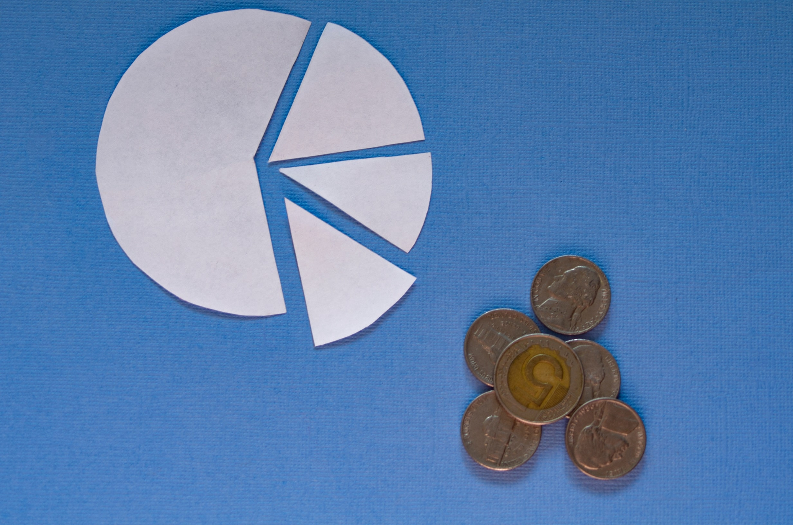
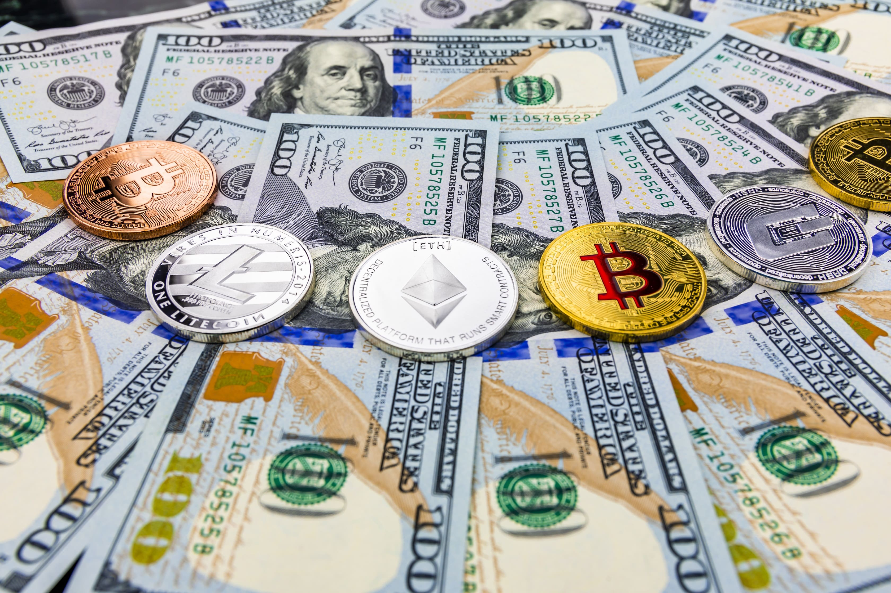

Understanding Crypto - Portfolio
There is always that one coin for everyone that has gotten them into the world of trading crypto. Usually there are three types of investors: those who have been Bitcoin fans for a long time, those who have arrived after a Bitcoin price surge and those who have found a project they really like and invested in it. What most of these investors have in common is that they hold only one type of an asset. This would be the old situation of “all eggs in one basket”. If you want to be more serious with trading and spending your time on exchanges, you need to take a look into diversifying your assets.
Diversifying your portfolio is an art as old as owning investments. No matter how great a land purchase is, it is not smart to invest all your money in a single property in case a hurricane hits. Life is unpredictable. So stock buyers have many different ways to obtain multiple baskets of assets. In this article we will take a look into how that translates to cryptos and what strategies you can use.
Timing

This is not as much about what coins to buy but when and how to buy them. You do not have to spend all of your money at this exact moment, going “all in”. One of the oldest investment jokes is that the market will go down after you have invested in it. As if someone was waiting for your name to show up in the books and then pushed the button “crash everything”. To evade that, it is smart to enter the market slowly. Spend 10-15% of your spending money each week, not all at the same time. In that case, if you have entered the market at the wrong time, you will not use it all.
Of course, that means that if the market will suddenly rocket after you have invested just 30% of your funds, you will get just 30% of the returns. That is something you have to realize when you invest - hindsight is 20/20 and if you will always look at missed opportunities, you will quite literally go insane. Real investing doesn’t consist of constant magical pays with 200% return each. What would you say to a man who expects to get a Royal flush every time he is dealt cards at a table? You’d say nothing to him, as there is no talking to such people. Investing is a steady climb where you cut your losses and approach it as a fund, not a lottery. Yes, diversifying will make your portfolio move more with the market in general and less dependant on a single asset, but that is how it is supposed to work. In general, if you can not wait to invest and want to go all in right now, long term investing might not be for you and you should probably stick to day trading.
Regional
This can seem counter-intuitive. Sure, it makes sense not to buy all property in a single forest, as it all can burn down in a single disaster. So how can that apply to assets that are on the internet, a global thing that can not be damaged by a natural disaster at all? That is mostly true for the biggest coins out there, but there is a wide and emerging market of regional coins. A separate coin that has been developed either as a response to economical problems of the region or as a political and nationalistic statement.
Investing in such a coin means that it is being tied to a specific region and its people. For example, there is a coin in Russia that has been adopted more than other regional coins. Such a coin will not suffer from new regulations in the US, quite the opposite. The stricter and worse the regulations in one region, the more people will flock to another. And such communities can hold the coin with more enthusiasm than others, as it can be a part of national pride for them. Or sometimes an actual pension fund, considering the abysmal state of their own state currency. In such cases some waves in the market will not rock this boat as much.
When that is being checked out, it is always useful to take a look at coins that have governmental support. Many countries have decided to make their own coins and corner the crypto market, but they are usually plagued with the same issues all governmental projects are - inefficiency, lack of innovation and red tape. Still, you can be more or less sure that they will have very favorable conditions to thrive in the country. Or, you know, as much as a governmental project can thrive. Still, you can be sure that the country is more progressive and won’t just outright ban cryptos, tanking your whole portfolio.
Types of coins

It is also important to understand the types of coins you are investing in. Are they slow climbing assets with a serious technological basis or just fast cash-grabs? It is impossible to have a clear classification of all coins and different people will disagree with your classification, but we can at least try. The first and main section of the market is Bitcoin. It is the coin that basically “is” the market itself. When it drops, everything drops and vice versa. So you might as well join it. One of the reasons why it is still being bought even by people who do not believe that it will climb again is that very many exchanges need it to buy other assets. So you are essentially buying a bridge to different coins. Buying Bitcoin is like investing in the market itself, holding a part of it and going with the flow with everything that happens.
The next one is a slow and stable cash flow - projects with a good team and a promising idea. For this the investor needs to do the most work, as these sorts of projects, while not rare, do not always have the strongest social media presence. So you have to dig them up yourself and examine what is being done. Some of these promising projects issue tokens that function more as securities than just ordinary stocks, meaning that they have gone through more regulation and can be considered more trustworthy. Still, even if you trust these sorts of projects, the need to diversify is there, so find three or more projects like this. And some would argue that this is the most interesting way to invest, as you actually become a part of the project, get to read their updates and feel genuine happiness and even pride in their success.
Then there is the radical opposite of a long and smart investment and that is the “straight to the moon!” coin. It has no fundamental value, it offers nothing new, the developers do not talk about technology or what it will be used for. It is just that - a coin that will soon cost 1000 dollars or more, so buy it! Buy it right now! Of course, everyone knows what it actually is and the point of such a coin is to join while it is cheap, wait for more people to jump in and then leave. This is just gambling with everyone playing “the first who leaves - wins”. And even this has turned into an old business model, as everyone knows the nature of these coins and the more people know it, the shorter the life cycle becomes. People are joining and leaving on the same day. But you can be entirely sure - these sort of hype coins will never disappear. They will just be dressed differently. Some might start to claim outrageous things about it to rope people in, some will try to be funny and get people with that and others will come up with something completely new to raise curiosity without actually doing anything. The same people who advise you to stay away from these volatile campaigns are the same ones who make money in them, so approach if you must, but approach with caution. That is the point of diversifying.
Conclusion
There are no golden ratios of diversifying. There are none in the stock market, but even less in crypto. The lines are so blurred you sometimes can’t even safely define what exactly is your asset, a token or a security. Because of that, take everything you read with healthy skepticism, even this article. Maybe you do not want to trade or have several assets. Maybe you just want to have that single coin you like and to hell with everything else. If so, we applaud you, you have your own thing and you do that. Nothing is an obligation, everything is an opportunity.
Thank you for reading our blog. If you have any questions about the topic or want to suggest a new one, please write an email to [email protected].